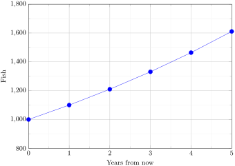
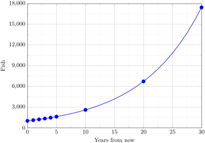
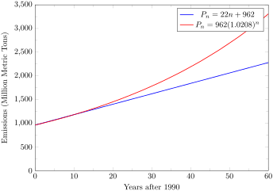

Apply exponential models to real world applications
Suppose that every year, only 10% of the fish in a lake have surviving offspring. If there were 100 fish in the lake last year, there would now be 110 fish. If there were 1000 fish in the lake last year, there would now be 1100 fish. Absent any inhibiting factors, populations of people and animals tend to grow by a percent of the existing population each year.
Suppose our lake began with 1000 fish, and 10% of the fish have surviving offspring each year. Since we start with 1000 fish, \(P_0 = 1000\text{.}\) How do we calculate \(P_1\text{?}\) The new population will be the old population, plus an additional 10%. Symbolically:
\(P_1 = P_0 + 0.10P_0\)
Notice this could be condensed to a shorter form by factoring:
While 10% is the growth rate, 1.10 is the growth multiplier. Notice that 1.10 can be thought of as “the original 100% plus an additional 10%”
For our fish population,
\(P_1 = 1.10(1000) = 1100\)
We could then calculate the population in later years:
\(P_2 = 1.10P_1 = 1.10(1100) = 1210\)
\(P_3 = 1.10P_2 = 1.10(1210) = 1331\)
Notice that in the first year, the population grew by 100 fish, in the second year, the population grew by 110 fish, and in the third year the population grew by 121 fish. While there is a constant percentage growth, the actual increase in number of fish is increasing each year.
Graphing these values we see that this growth doesn’t quite appear linear.

Figure4.2.1.Image Credit: RRCC
To get a better picture of how this percentagebased growth affects things, we need an explicit form, so we can quickly calculate values further out in the future.
Like we did for the linear model, we will start building from the recursive equation:
Adding these values to our graph reveals a shape that is definitely not linear. If our fish population had been growing linearly, by 100 fish each year, the population would have only reached 4000 in 30 years compared to almost 18000 with this percent-based growth, called exponential growth.

Figure4.2.2.Image Credit: RRCC
In exponential growth, the population grows proportional to the size of the population, so as the population gets larger, the same percent growth will yield a larger numeric growth.
Definition4.2.3.Exponential Growth.
If a quantity starts at size \(P_0\) and grows by \(R\%\) (written as a decimal, \(r\)) every time period, then the quantity after \(n\) time periods can be determined using either of these relations:
Recursive form:
\(P_n = \left(1+r \right) P_{n-1}\)
Explicit form:
\(P_n = P_0 \left(1+r \right)^n\)
We call \(r\) the growth rate.
The term \(\left(1+r \right)\) is called the growth multiplier, or common ratio.
Example4.2.4.
Between 2007 and 2008, Olympia, WA grew almost 3% to a population of 245 thousand people. If this growth rate was to continue, what would the population of Olympia be in 2014?
As we did before, we first need to define what year will correspond to \(n = 0\text{.}\) Since we know the population in 2008, it would make sense to have 2008 correspond to \(n = 0\text{,}\) so \(P_0 =
245000\text{.}\) The year 2014 would then be \(n = 6\text{.}\)
We know the growth rate is 3%, giving \(r = 0.03\text{.}\)
The model predicts that in 2014, Olympia would have a population of about 293 thousand people.
Note4.2.5.Evaluating Exponents on the Calculator.
To evaluate expressions like \(1.03^6\text{,}\) it will be easier to use a calculator than multiply 1.03 by itself six times. Most scientific calculators have a button for exponents. It is typically either labeled like:
^ , \(y^x\), or \(x^y\)
To evaluate 1.036 we’d type 1.03^6. Try it out - you should get an answer around 1.1940523.
Problem4.2.6.Try It Now.
India is the second most populous country in the world, with a population in 2008 of about 1.14 billion people. The population is growing by about 1.34% each year. If this trend continues, what will India’s population grow to by 2020?
Using \(n = 0\) corresponding with 2008, \(P_{12} = 1.14 \left(1+0.0134 \right)^{12}\) = about 1.337 billion people in 2020
Example4.2.7.
A friend is using the equation \(P_n = 4600 \left(1.072 \right)^n\) to predict the annual tuition at a local college. She says the formula is based on years after 2010. What does this equation tell us?
In the equation, \(P_0 = 4600\text{,}\) which is the starting value of the tuition when \(n = 0\text{.}\) This tells us that the tuition in 2010 was $4,600.
The growth multiplier is 1.072, so the growth rate is 0.072, or 7.2%. This tells us that the tuition is expected to grow by 7.2% each year.
Putting this together, we could say that the tuition in 2010 was $4,600, and is expected to grow by 7.2% each year.
Example4.2.8.
In 1990, the residential energy use in the US was responsible for 962 million metric tons of carbon dioxide emissions. By the year 2000, that number had risen to 1182 million metric tons. If the emissions grow exponentially and continue at the same rate, what will the emissions grow to by 2050?
Similar to before, we will correspond \(n = 0\) with 1990, as that is the year for the first piece of data we have. That will make \(P_0 = 962\) (million metric tons of CO2). In this problem, we are not given the growth rate, but instead are given that \(P_{10} = 1182\text{.}\)
When \(n = 10\text{,}\) the explicit equation looks like:
\(P_{10} = P_0 \left(1+r \right)^{10}\)
We know the value for \(P_0\text{,}\) so we can put that into the equation:
\(P_{10} = 962 \left(1+r \right)^{10}\)
We also know that \(P_{10} = 1182\text{,}\) so substituting that in, we get
\(1182 = 962 \left(1+r \right)^{10}\)
We can now solve this equation for the growth rate, r. Start by dividing by 962.
\begin{equation*}
\frac{1182}{962} = \left( 1 + r \right)^{10}
\end{equation*}
Then take the 10th root of both sides:
\begin{equation*}
\sqrt[10]{\frac{1182}{962}}=1 + r
\end{equation*}
Finally subtract 1 from both sides
\begin{equation*}
r = \sqrt[10]{\frac{1182}{962}}-1
\end{equation*}
\begin{equation*}
r = 0.0208 = 2.08\%
\end{equation*}
So if the emissions are growing exponentially, they are growing by about 2.08% per year. We can now predict the emissions in 2050 by finding \(P_{60}\)
\(P_{60} = 962\left( 1+0.0208n \right)^{60} = 3308.4\) million metric tons of CO2 in 2050
Note4.2.9.Rounding.
As a note on rounding, notice that if we had rounded the growth rate to 2.1%, our calculation for the emissions in 2050 would have been 3347. Rounding to 2% would have changed our result to 3156. A very small difference in the growth rates gets magnified greatly in exponential growth. For this reason, it is recommended to round the growth rate as little as possible.
If you need to round, keep at least three significant digits - numbers after any leading zeros. So 0.4162 could be reasonably rounded to 0.416. A growth rate of 0.001027 could be reasonably rounded to 0.00103.
Note4.2.10.Evaluating Roots on the calculator.
In the previous example, we had to calculate the 10th root of a number. This is different than taking the basic square root, \(\sqrt{}\text{.}\) Many scientific calculators have a button for general roots. It is typically labeled like:
\(\sqrt[n]{}\text{,}\)\(\sqrt[x]{}\text{,}\) or \(\sqrt[y]{x}\)
To evaluate the 3rd root of 8, for example, we’d either type 3 \(\sqrt[n]{}\) 8, or 8 \(\sqrt[n]{}\) 3, depending on the calculator. Try it on yours to see which to use - you should get an answer of 2.
If your calculator does not have a general root button, all is not lost. You can instead use the property of exponents which states that \(\sqrt[n]{a} = a^{1/n}\)
So, to compute the 3rd root of 8, you could use your calculator’s exponent key to evaluate \(8^{1/3}\text{.}\) To do this, type:
8 ^ (1/3)
The parentheses tell the calculator to divide 1/3 before doing the exponent.
Problem4.2.11.Try It Now.
The number of users on a social networking site was 45 thousand in February when they officially went public, and grew to 60 thousand by October. If the site is growing exponentially, and growth continues at the same rate, how many users should they expect two years after they went public?
Here we will measure n in months rather than years, with \(n = 0\) corresponding to the February when they went public. This gives \(P_0 = 45\) thousand. October is 8 months later, so \(P_8 = 60\) thousand.
\begin{equation*}
60 = 45 \left( 1 + r \right)^8
\end{equation*}
Divide both sides by 45:
\begin{equation*}
\frac{60}{45} = \left( 1 + r \right)^8
\end{equation*}
Take the 8th root of both sides:
\begin{equation*}
\sqrt[8]{\frac{60}{45}}=1 + r
\end{equation*}
\begin{equation*}
1.0366 = 1 + r
\end{equation*}
\begin{equation*}
0.0366 = r
\end{equation*}
Since r = 0.0366, or 3.66%, the general explicit equation is
Again we will get \(n = 0\) correspond with 1990, giving \(P_0 = 962\text{.}\) To find \(d\text{,}\) we could take the same approach as earlier, noting that the emissions increased by 220 million metric tons in 10 years, giving a common difference of 22 million metric tons each year.
Alternatively, we could use an approach similar to that which we used to find the exponential equation. When \(n = 10\text{,}\) the explicit linear equation looks like:
This tells us that if the emissions are changing linearly, they are growing by 22 million metric tons each year.
Predicting the emissions in 2050,\(P_{60} = 962 + 22(60) = 2282\) million metric tons.
You will notice that this number is substantially smaller than the prediction from the exponential growth model. Calculating and plotting more values helps illustrate the differences.

Figure4.2.13.Image Credit: RRCC
So how do we know which growth model to use when working with data? There are two approaches which should be used together whenever possible:
Find more than two pieces of data. Plot the values, and look for a trend. Does the data appear to be changing like a line, or do the values appear to be curving upwards?
Consider the factors contributing to the data. Are they things you would expect to change linearly or exponentially? For example, in the case of carbon emissions, we could expect that, absent other factors, they would be tied closely to population values, which tend to change exponentially.